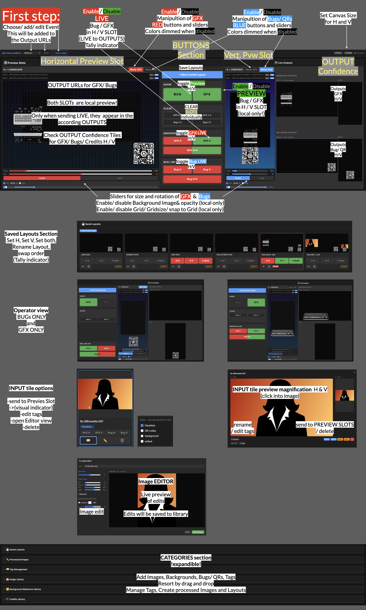

Office Hours Graphics — Operator Guide

1. Before you start
- Open the gallery and Connect to Worker (first time only, remembered after): Worker URL
https://adp-show-graphics.mohn-edgar.workers.devand the API key (shared separately by André — not in this doc). - Pick the Event (top-left dropdown). Each event has its own library, layouts, and output URLs. Wrong event = "nothing shows up".
Colours: ● green = loaded/preview · ● red = on air · ● dark = not loaded. H = landscape, V = portrait — independent; H+V acts on both.
2. Preview Slots (left = H Landscape, right = V Portrait)
Each slot shows both layers — GFX (full graphics) and Bug / QR (overlay). All controls here are local preview; they never reach air on their own.
- Manip. GFX / Manip. Bug tabs — pick which layer the controls affect (Bug is default; GFX tinted red, Bug blue). Click the active tab again to deactivate.
- Drag the image to position it (can go off-frame). Scale 10–300% and Rotate ±180° sliders — click the value to reset.
- Contain = whole image (transparent edges possible); Cover = fills frame (crops).
- Grid+Snap and BG Ref are preview-only alignment aids — never on air.
- The output URL row (Open / Copy) is what vMix loads as a browser source.
3. Sending to air (centre panel)
- GRAPHICS LIVE: GFX H GFX V GFX H+V
- BUG / QR LIVE: Bug H Bug V Bug H+V
A SEND LIVE button is dark (empty slot), ● green (loaded, not aired), or ● red (on air). Press a red button to take it off air. CLEAR (GFX/Bug H/V) removes the image and goes transparent.
4. Show BUG | GFX — view modes
The two big SHOW: BUG | GFX toggles focus the workspace: both on (default), BUG only (hides GFX, enlarges the Bug monitor), GFX only (hides Bug, enlarges GFX). View-only — does not change what's on air.
5. Live Outputs (confidence monitors, right)
Live previews of the actual output pages (GFX H/V, Bug H/V) exactly as vMix sees them. Glance here to confirm what's really on air. Click a monitor to magnify; click again to close.
6. Saved Layouts
- + Save Current Layout saves all four slots under a name.
- H / V / Both recall that layout. Tally: ● green = its content is loaded (preview), ● red = on air (Both red only when H and V both live), dark = not loaded.
- Card border/badge = ACTIVE (matches what's loaded) / ON AIR (live). Rename (✏) / Delete (🗑); drag to reorder.
7. Image Library
- Upload (📤 or drag from Finder); tag on upload (categories + free tags; auto-tag by filename).
- Slot buttons (GFX H/V, Bug H/V) on each tile assign to a slot — colour = tally (🟢 loaded, 🔴 on air, dark = not assigned). Click an assigned button to clear it.
- 🏷 Tags · ✏ Editor · 🗑 Delete per tile; click a thumbnail to magnify.
- Image Editor — rotate, crop/trim, background knock-out (colour + tolerance → transparent). Save as Copy makes a new edited image; original untouched.
- Categories / Background References / Tag Management — expandable organising sections.
8. Adding outputs to vMix
Use each slot's output URL as a vMix Browser Input at the matching resolution — H 3840×2160, V 2160×3840 (defaults; check ⚙ Settings for the event). A graphic appears on air ~1–2 s after SEND LIVE — that's normal.
9. Troubleshooting
| Symptom | Check |
|---|---|
| Graphic not on air | Is its SEND LIVE button red? Green/dark = preview only — press it. |
| Wrong/old graphic showing | Right Event? Check the Live Outputs monitor. |
| Nothing in a slot | Load an image from the library (its GFX/Bug H/V button). |
| Vertical bug looks empty | Use a portrait/square QR for V — a landscape image in portrait shows only a thin strip. |
| Preview stale after switching tabs | Polling pauses while the gallery tab is hidden (saves quota) and resumes on return — give it a second. |
| ⏸ Paused (idle) badge | The gallery paused its own previews after ~5 min of no activity (saves requests). Your outputs are still live. Move the mouse / press a key to resume. |
Tip: keep one gallery tab open during a show and close idle ones — every open gallery polls the server continuously.